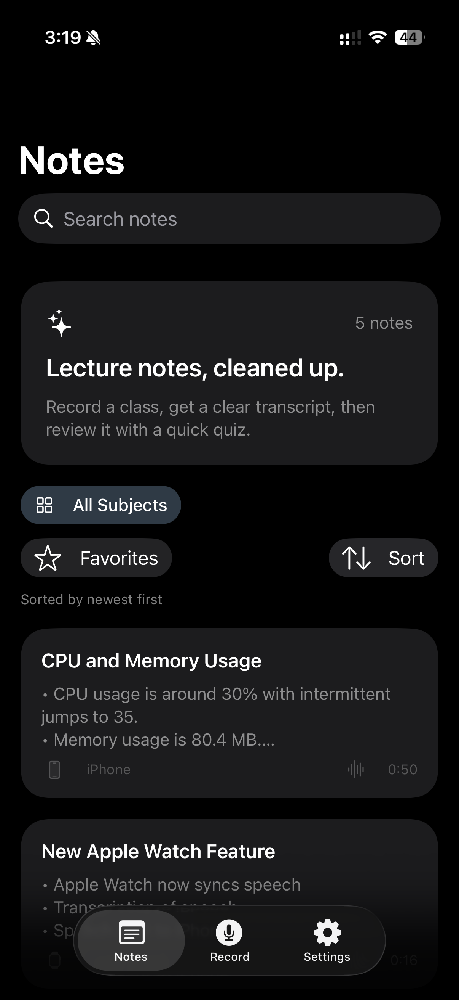
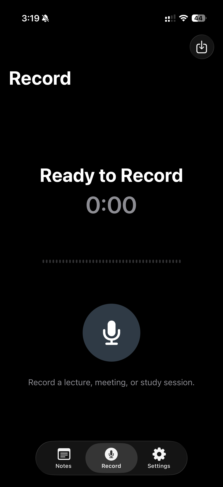
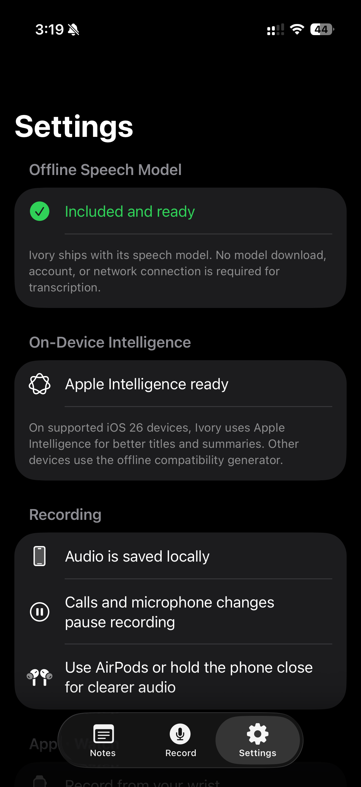
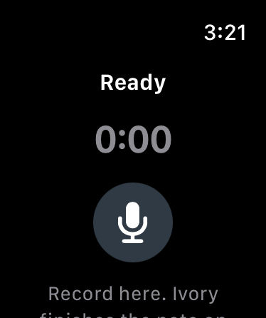
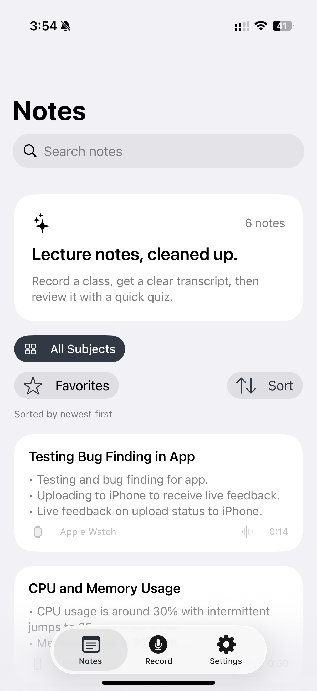
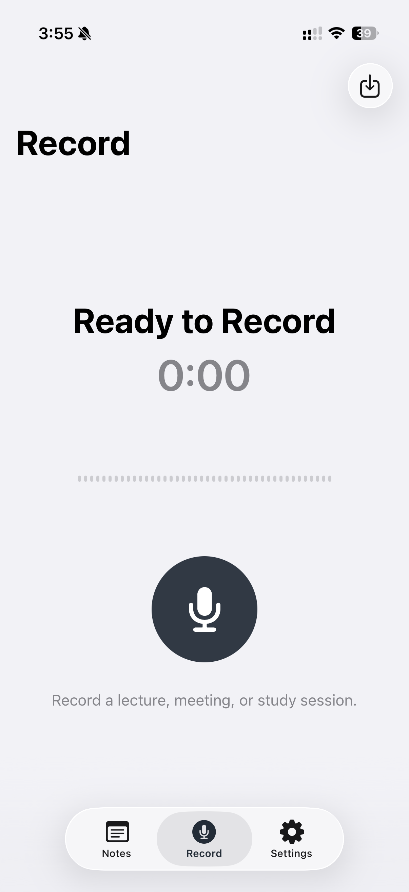
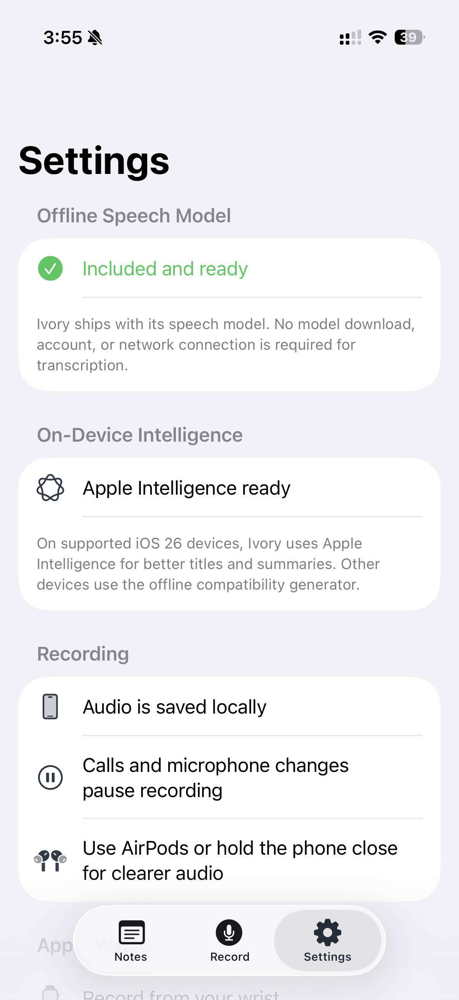

Record
Capture ideas, lectures, meetings, or Apple Watch recordings whenever they happen.
Private voice notes
Ivory Notes turns speech into useful notes while keeping recordings, transcripts, and study materials on your devices.
See Ivory Notes
Record on iPhone or Apple Watch, then keep the transcript, summary, settings, and storage controls close at hand.
Dark mode
High-contrast views for late-night recording and review.




Light mode
The same focused workflow in a bright interface.



How it works
Capture ideas, lectures, meetings, or Apple Watch recordings whenever they happen.
Ivory Notes turns speech into text on device, without sending your audio to Ivory Notes servers.
Read the transcript, summary, study guide, source, and file size in one private workspace.
Built for focus
Ivory Notes includes its speech model, so transcription does not require an account or internet connection.
Turn recordings into editable transcripts, concise summaries, study guides, and flashcards.
Start from iPhone or Apple Watch, then organize and review everything privately on iPhone.
Preview
Ivory Notes keeps the app simple: record quickly, find notes by subject, and understand what each file contains.
Summary, transcript, duration, file size, source, and study tools stay together.
Keep classes, ideas, interviews, and personal notes easy to browse.
Start on Apple Watch, then send the audio back to iPhone for review.
Release notes
Track the current app version, Apple Watch updates, privacy improvements, and upcoming premium features as Ivory Notes grows.
The first release focuses on private recording, offline transcription, organized notes, study tools, widgets, and Apple Watch capture.
Read release notesPremium features are being explored for deeper Apple ecosystem support, faster capture, and a more personal workspace.
Your notes and audio are stored locally. Ivory Notes does not operate an account system or an Ivory Notes server that receives your recordings. You control deletion from inside the app.